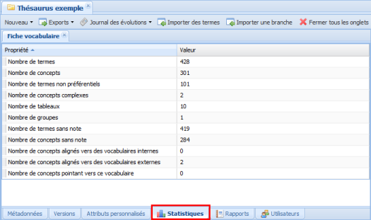

Statistiques
ConceptStatistiques⚓
L'outil Statistiques de Ginco permet à l'administrateur d'un vocabulaire de visualiser les informations récapitulatives sur le nombre d'éléments qui composent le vocabulaire.
RéglementaireOù les trouver ?⚓
Les statistiques sont accessibles depuis l'onglet Statistiques de la Fiche vocabulaire :

RemarqueRemarque⚓
Vous pouvez personnaliser l'affichage des statistiques en cliquant sur un titre de colonne (Propriété ou Valeur) et passer de l'ordre croissant à décroissant.